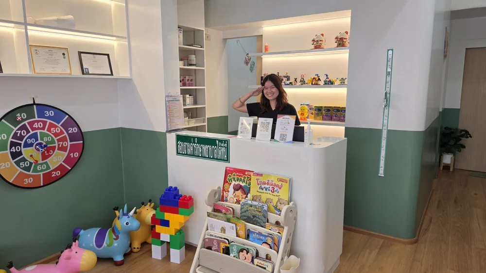
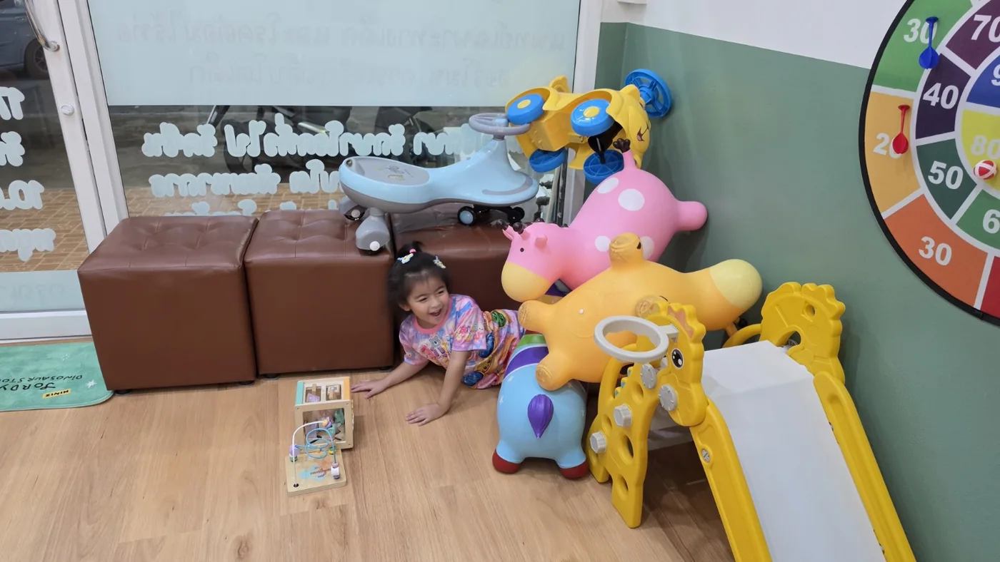

เติบโตคลินิกเด็กและวัยรุ่น
ก่อนถึงทางเข้าตลาดกำนันหลัก
อ.เมือง ราชบุรี
เวลาทำการ
- จันทร์–พุธ และศุกร์
- 17.00–20.00 น.
- พฤหัสบดี
- ปิด
- เสาร์–อาทิตย์
- 10.00–17.00 น.
- โทรศัพท์
- 092-444-9654
- Facebook เติบโตคลินิก
ข้อมูลสำหรับการเดินทาง

